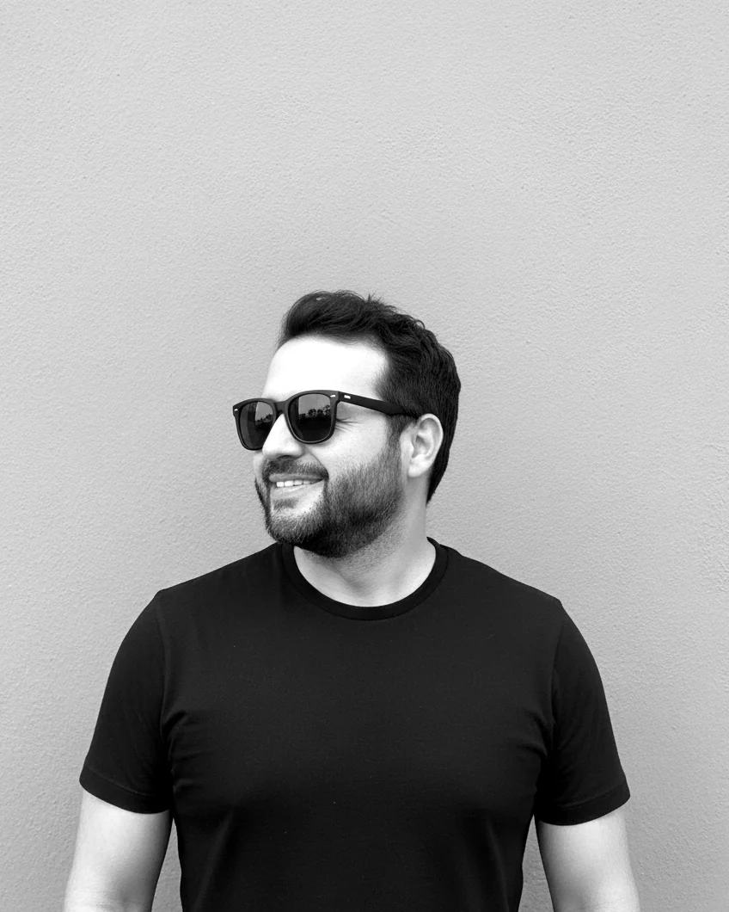

I started in art direction, so I care how things look. Years later, I care more about how they’re structured.
I’m Salvador Gonzalez Alvizouri; Sal for short, a product designer based in Jalisco, Mexico. Starting out in art direction and agency web design, I transitioned into UX/UI in 2018 with a focus on turning complex web tools into clear, intuitive, and well crafted products.
Today, I lead product and design across permissions, information architecture, and design systems. I enjoy shaping the bigger picture while staying hands on with the details using AI to prototype and validate ideas rapidly before they ever reach a developer.
Outside of work, I’m drawn to art, cinema, gastronomy, and travel. Exploring new places, films, and food culture keeps me curious and continually feeds the visual sensibility I bring back to my design work.
Algovisual is the name I work under: my two surnames, Alvizouri and Gonzalez, put together.

Where I’ve worked
- End-to-end UX on internal tools that are becoming commercial products: research, flows, analysis, accessibility, wireframes, prototypes and UI.
- Product and design lead of Visicart and Page Plucker, working with the agency owner and two developers. Job title: User Experience Designer; role in practice: product and design lead.
- Responsive websites and digital products for clients.
- Wireframes, prototypes and high-fidelity UI in Figma, branding and illustration.
- Projects managed end to end with developers.
- Responsive web and mobile interfaces for internal clients.
- Led design from research to prototyping and testing.
- Built WordPress sites.
- Directed a team of designers, copywriters, community managers and account managers on digital campaigns and websites.
- Main contact for stakeholders.
- Art direction for national digital campaigns and websites.
- Wireframes, prototypes and responsive interfaces.
- Visual direction for Mondelez International campaigns across digital and print.
- Illustration for national campaigns.
- 2D animation and visual assets for interactive platforms.
- Worked with designers and developers.
- Internal websites and microsites.
- Maintenance of Cinépolis websites and apps.
Education
What I work with
Design
Figma, Photoshop, Illustrator, Affinity Designer
Prototype & motion
ProtoPie, Jitter
Collaborate & build
Miro, FigJam, Claude Code
Three rules I work by
-
Structure before screens
I map who sees what before I draw anything.
-
Users before polish
Real walkthroughs caught mistakes in my own first version.
-
Testing for improvement
Iterating and adjusting is the only way to keep improving a product.
Open to product design roles. Let’s talk.
The best way to reach me is by email or LinkedIn. My CV is one click away.